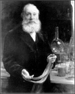

William Henry Perkin
(You can read more about William Henry Perkin in the Exploring Life Chapter 9 Feature: The Discovery of Chromosomes.)
In 1856, William Perkin, an eighteen–year–old Londoner, made a discovery that would revolutionize the world of color—and make him very rich. A chemist by trade, Perkin was trying to synthesize an artificial form of quinine. Quinine, the only known treatment for malaria, is obtained only from the bark of the cinchona tree, grown in Java. Therefore, it was very scarce. In his pursuit of a synthetic quinine, Perkin concocted a purple gooey substance from coal tar. He didn't realize the substance's potential for the fashion industry until he accidentally spilled some on his silk shirt and stained it purple!
Prior to this discovery, all colored fabrics were created using natural dyes. Roots, leaves, and flowers of plants were used to yield interesting colors. Some insects also produced vibrant colors. Purple was a difficult color to dye, and the Murex snail was the main source for this color. These snails, found in the Mediterranean, were difficult to obtain. With his discovery of synthetic purple dye, Perkin changed the fashion world. Soon mauve (or mauveine, as he called it) became the color of choice not only for royalty but for common people as well. Perkin built a chemical factory and produced large quantities of mauvine and other colors, as well. Other chemists continued his work and developed additional synthetic dyes.
Perkin had no idea that his mauveine, a type of aniline dye, would have an impact not only on the fashion world but also on the scientific world. In 1882, a scientist named Walther Flemming used Perkin's dye to stain some cells, which he then looked at under a microscope. The stain made it possible for him to see a tangle of threads in the nucleus. He called these threads chromatin, meaning "color." Later, while observing cells undergoing cell division, he could see the individual chromosomes. This discovery—that dyes could be used to see parts of the cell—led to the development of a variety of dyes that would be important in identifying cell organelles and even in locating genes.
Learn more about: